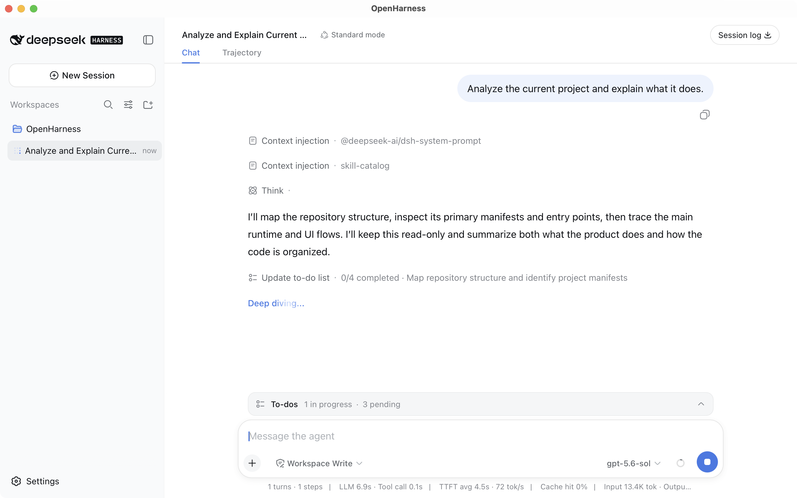

macOS
macOS 15+ · Apple Silicon / Intel
无需单独安装 Node.js 或输入启动命令。打开原生窗口，直接进入完整、可组合、可追溯的 Agent 工作空间。

下载
安装包已包含运行环境，无需另外安装 Node.js。页面会优先标出当前设备对应的版本。
macOS 15+ · Windows 10+ · Linux x64/ARM64
macOS 15+ · Apple Silicon / Intel
Windows 10 / 11 · x64 / ARM64
Ubuntu 22.04+ / Debian 12+ · x64 / ARM64
完整 Harness 体验
OpenHarness 将 DeepSeek Harness（DSH）完整装进跨平台桌面应用。模型、工具、技能、会话与插件保持一致，只是使用入口从命令行变成桌面窗口。
DeepSeek Harness 官方网站DeepSeek Harness 与运行环境随 App 提供，无需另外安装 Node.js 或输入启动命令。
从桌面打开窗口，关闭后继续驻留系统托盘，需要时随时回到工作区。
如果已经使用 DSH，现有模型配置、会话和插件可以继续使用，无需重新开始。
完整的 Harness 能力
OpenHarness 不改变 DeepSeek Harness 的能力，而是让模型、工具、技能、会话和执行环境在桌面入口中继续组合。
选择、替换或扩展模型接入。
让 Agent 理解环境并执行真实任务。
恢复、分叉、搜索与重放同一事件流。
为不同任务组合可控执行环境。
保留工作状态与长期上下文。
支持持续运行与多阶段 Agent 工作流。
从下载到第一个任务
OpenHarness 已经把 DeepSeek Harness（DSH）的 Web UI 和运行环境装进 App，你只需要完成模型与工作区设置。
选择当前系统和架构对应的安装包，完成安装后直接打开 OpenHarness。
在“设置 → 模型”中填写 DeepSeek API Key，也可以继续使用已有的模型配置。
添加需要处理的项目文件夹，新建会话并描述任务，后续工作都在窗口中完成。
开放、透明、可验证
OpenHarness 原创代码采用 Apache License 2.0；内置的 DeepSeek Harness 组件单独采用 MIT License。为避免品牌混淆，OpenHarness 使用独立的名称、图标、Bundle ID 和视觉主题。
常见问题
不是。OpenHarness 由 MicroSpotlight 独立开发，使用独立的产品名称、图标、Bundle ID 和视觉主题，不暗示 DeepSeek 的认可或隶属关系。
OpenHarness 不提供独立云服务，也不会把数据上传到我们的服务器。模型供应商和插件可能有各自的数据处理方式，请以实际配置为准。
不会创建另一套配置目录。OpenHarness 复用 ~/.dsh，因此已有模型凭据、会话与插件可继续使用。
OpenHarness 支持 macOS 15.0+、Windows 10+ x64/ARM64，以及 Ubuntu 22.04+、Debian 12+ 等 x64/ARM64 Linux 发行版；Linux 需要 glibc 2.35+ 和 WebKitGTK 4.1。
按设备架构选择 x64 或 ARM64：macOS 使用 DMG，Windows 使用 EXE，Linux 可选择 AppImage、Debian 或 RPM 包。